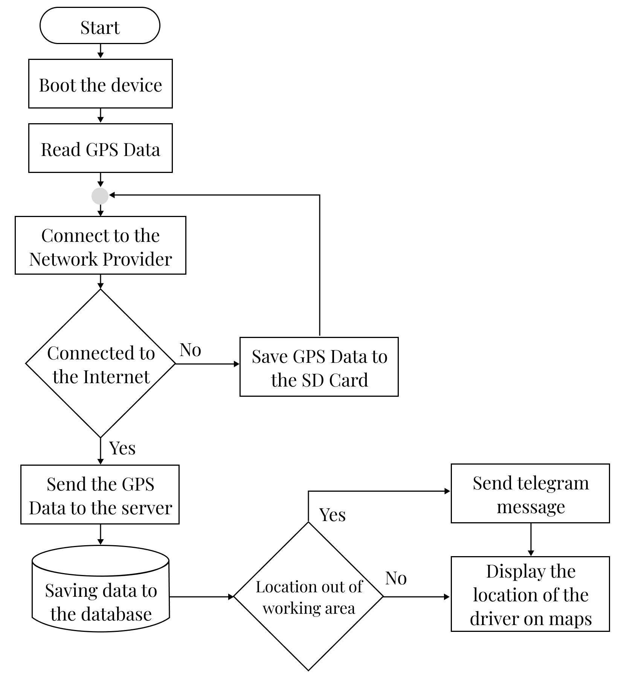
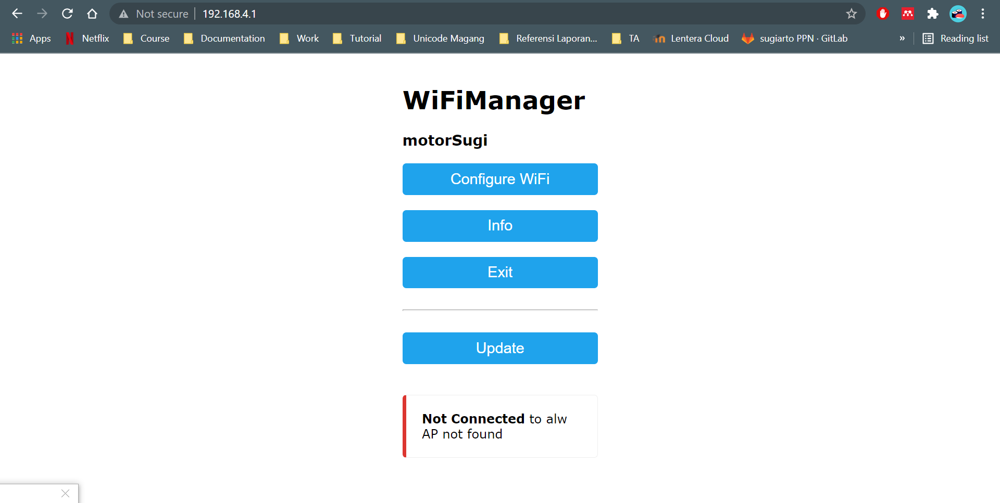
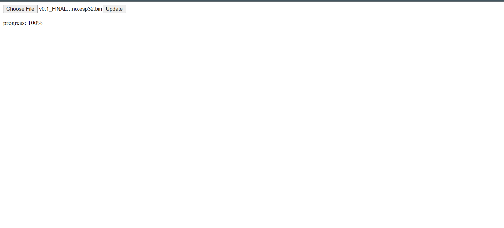
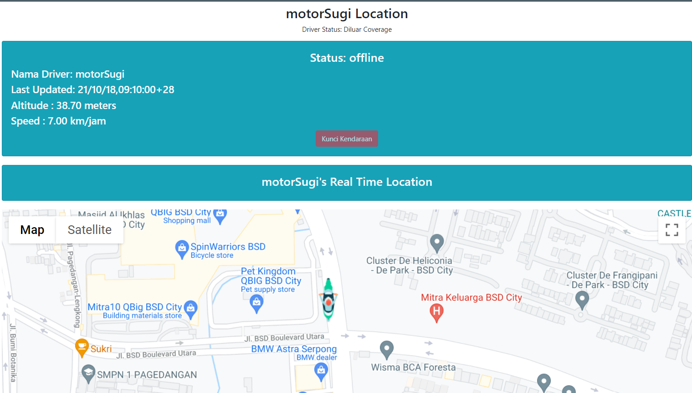
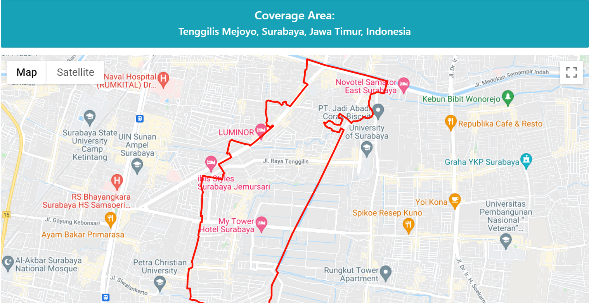
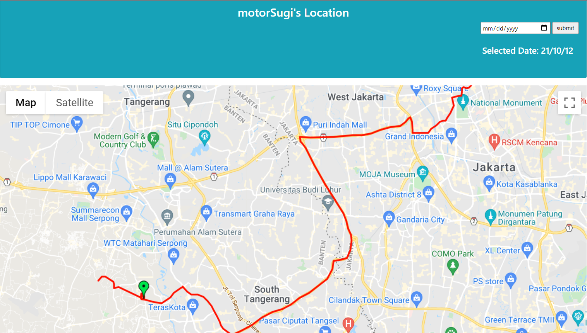

IoT GPS Tracking System for Motorcycle
Abstract
A company has many drivers to distribute their product to the customer. The drivers are working around Surabaya and are divided into some regions. The company owner wants to monitor the driver's activities while working; for example, do the drivers actively work inside their responsible region, or do they go outside their working region? If the driver often works outside the region, the owner will get a notification and can reprimand the corresponding driver. Besides that, the owner could also lock the driver's motorcycle in case the motorcycle is robbed. Each motorcycle has a microcontroller, Modem, and GPS, and the owner monitors each driver through the web application.
Hardware
This project was done by experimenting with two different Chip Modem, one using SIM7000C and one using SIM7600G-H R2. The later processor was used for the final product. The SIM 7000C doesn't support the 4G LTE Band (2, 4, 5, 17) of our desired Network, the Smartfren IoT Things Spark, but supports the 4G CAT-M band like Telkomsel provider's band. Because the goal is to use the Smartfren IoT provider, the author decided to use another Chip Modem, SIM 7600 G-H R2, which supports 4G LTE Band. However, I will give a brief of each experiment using each modem.
 The hardware diagram for the SIM7000C is more complex than the SIM7600G H R2 because the modem board is an external module and needs to be connected to the main processor. The main processor is ESP32, and SIM7000C is connected to the ESP32 through the UART. Therefore, to use the SIM7000C, the program from the ESP32 will send AT Command through the UART to the SIM7000C module. Besides that, the ESP32 is also connected to some IO, such as the buttons and a relay. The hardware is powered through a LiPo battery, which could be charged through the Solar Cell during the day or Motorcycle Accumulator at night.
The hardware diagram for the SIM7000C is more complex than the SIM7600G H R2 because the modem board is an external module and needs to be connected to the main processor. The main processor is ESP32, and SIM7000C is connected to the ESP32 through the UART. Therefore, to use the SIM7000C, the program from the ESP32 will send AT Command through the UART to the SIM7000C module. Besides that, the ESP32 is also connected to some IO, such as the buttons and a relay. The hardware is powered through a LiPo battery, which could be charged through the Solar Cell during the day or Motorcycle Accumulator at night.
 Unlike SIM7000C, which needs to use external wiring to the ESP32, SIM7600G-H R2 is embedded in the board with the ESP32, and the communication between them also uses UART communication. The board also has an embedded SD Card slot, an 18650 Battery socket, and a solar cell port. The author also added an RTC (Real-Time Clock) module equipped with a relay.
Unlike SIM7000C, which needs to use external wiring to the ESP32, SIM7600G-H R2 is embedded in the board with the ESP32, and the communication between them also uses UART communication. The board also has an embedded SD Card slot, an 18650 Battery socket, and a solar cell port. The author also added an RTC (Real-Time Clock) module equipped with a relay.
Block Diagram
 The hardware device or the IoT contains just like the previously explained section. For the server, we use Raspberry Pi 4 because we just created a prototype system. Inside the server, there are various services such as Flask as the web server, MQTT for handling the communication with the IoT devices, MySql as the database for storing the data, Google Maps API Key for visualizing maps, OpenStreetMap for additional features like detecting the working area of the drivers, and the Telegram API which handles the notification, registering new driver, and monitoring the drivers using the Telegram Bot.
The hardware device or the IoT contains just like the previously explained section. For the server, we use Raspberry Pi 4 because we just created a prototype system. Inside the server, there are various services such as Flask as the web server, MQTT for handling the communication with the IoT devices, MySql as the database for storing the data, Google Maps API Key for visualizing maps, OpenStreetMap for additional features like detecting the working area of the drivers, and the Telegram API which handles the notification, registering new driver, and monitoring the drivers using the Telegram Bot.
 The system flowchart for tracking the driver's location starts with booting the device, then reading the GPS data from the SIM7600G-H R2. Then connecting to the network provider for the internet connection. If the device can't connect to the internet, then the GPS will be saved into the SD Card and sent to the server after being connected. While the device got an internet connection, the data will be sent to the server and saved into the database on the server. The data will be calculated; if classified as out of working area, the server will send a notification and telegram message. On the other hand, the driver's location will be displayed on the maps through the website.
The device is also equipped with the OTA (Over The Air) Firmware, so the device's firmware could be flashed easily in the future through OTA. The OTA could be done through the website. First, the device will act as the Access Point, and we need to connect to the device access point. Upon connected, we could access through the website for flashing the firmware.  
Experiments
The experiments were done by carrying out the device outside the working area to test the detection and the telegram notification. The device sends GPS data periodically to the server, displaying the location of the driver on the map.
 Also, the driver's location history visualized in the experiments.
The server then notify the owner through the Telegram. Besides notification, the Telegram also could response to some commands, for example, tracking the driver location, registering a new driver, and see the list of drivers.
Contributing Organizations & People
This research was successfully conducted with the help of some people. I would like to thank:
- Mr. Indar Sugiarto as my internship supervisor.
- Mr. Christian & Mr. Agung as the company supervisor from Unicode Indonesia.
- and other people who I couldn't mention one by one.